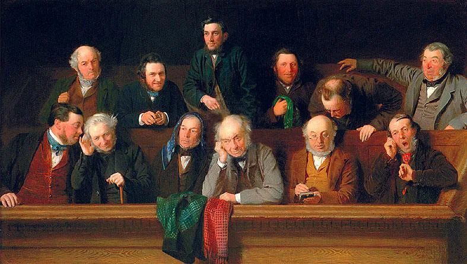

Recupera
De memória, sem abrir o caderno.
De memória
Que critérios diferentes podem orientar uma distribuição?
Confirmar
Igualdade, necessidade e ordem de chegada, entre outros. Cada critério tem efeitos diferentes.
Aplicar a mesma regra a situações diferentes garante justiça?
Confirmar
Não, por si só. A regra tem de poder ser explicada a quem recebe menos.
O que mudou do teu argumento v1 para o v2?
Vê
Observa primeiro. Lê depois.
Lê a situação. Conta os votos; depois procura as razões.
Exemplo escrito para esta sessão.
Votar conta posições; deliberar confronta razões. Numa cena, a ação, a pausa e a resposta evitada também constroem a relação de poder. O subtexto precisa de pistas.
Decide
Primeiro em silêncio, cada pessoa. Depois em grupo.
Sem ecrã
Primeiro, em silêncio
Resume a razão de que discordas antes de responder.
Depois, em grupo
- Muda a posição de uma pausa. Que relação se altera?
- Compara duas soluções por um critério comum.
Comparar razões
A maioria precisa de fundamento; a discordância também. Uma pausa não significa sempre medo ou submissão: interpreta-a no conjunto das falas e ações.
Faz
Em papel ou no ficheiro do grupo.
Em papel
Escolhe uma ordem no guião. Identifica quem decide, quem transmite e quem sofre o efeito.
Conclui a versão integral do guião. Integra uma decisão contestada e indicações úteis de ação ou pausa. Lê o conjunto e assinala duas passagens por rever.
GuardarGuião integral, versão de trabalho.
Rever com outra pessoa
Outro grupo resume a decisão e o seu efeito. Justifica uma escolha formal e uma alternativa que rejeitaste.
Leva
Em papel, antes de sair.
Em papel
Em papel, antes de sair
Numa frase: o que distingue votar de deliberar?
Para ver depois da aula
Saber o que está certo não basta: é preciso dizê-lo a quem decide. O The Ethics Centre fala de coragem moral e de imaginação moral.
Antes de verJá ficaste calado quando achavas que algo estava errado? O que te travou?
How to Have Moral Courage & Moral Imagination?
The Ethics Centre. Em inglês.
Depois de verO que distingue a coragem moral da simples teimosia?
Em inglês. Se as legendas não aparecerem, liga-as no leitor.
Confirma
- A discordância responde a uma razão.
- As pausas têm contexto.
- As cenas têm continuidade.
O registo fica neste aparelho.